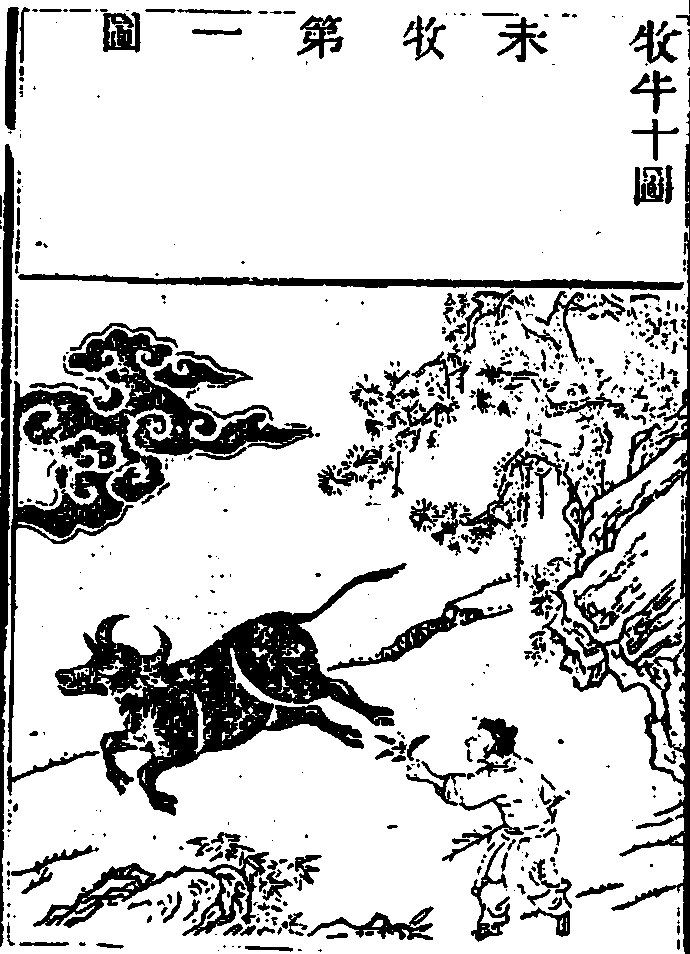
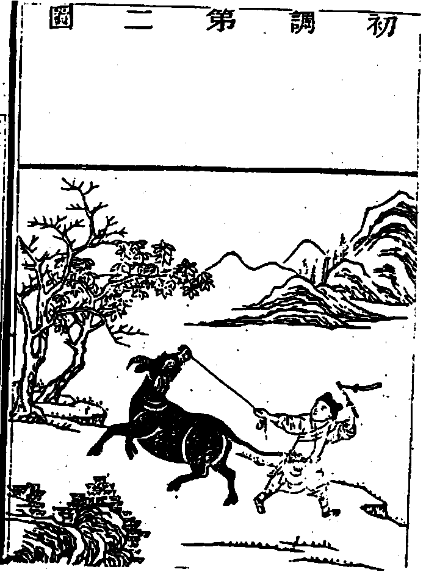
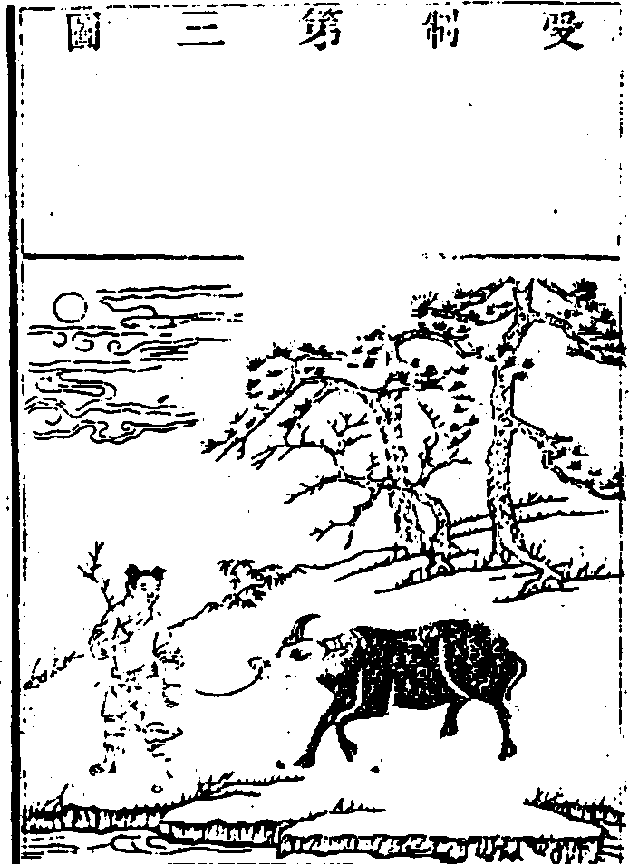
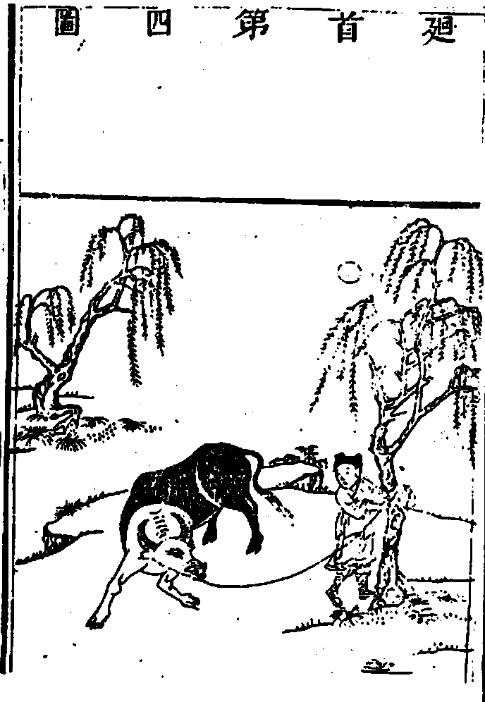
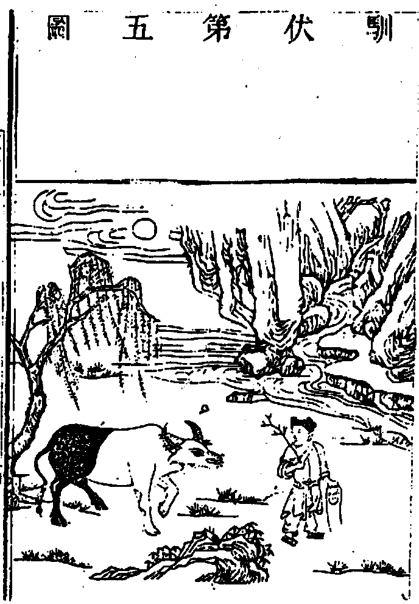
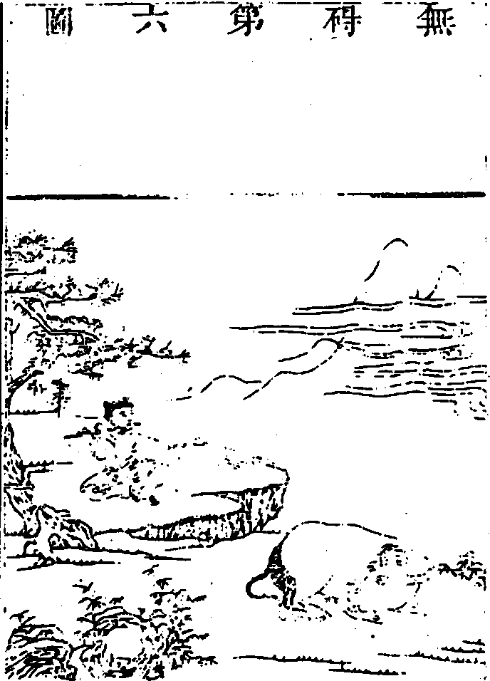
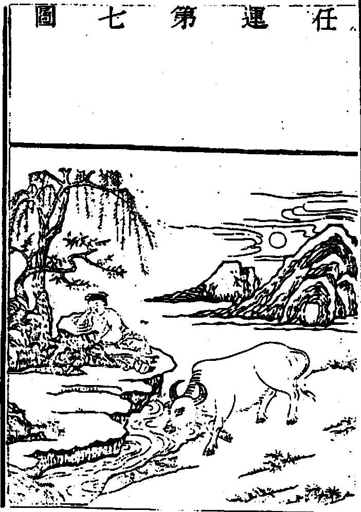
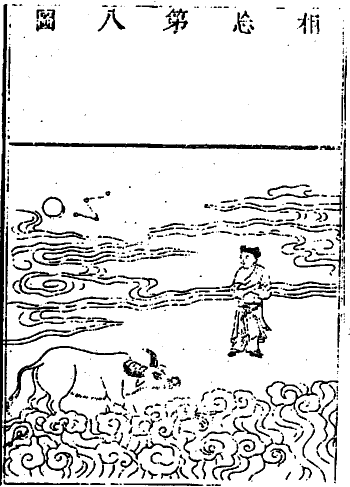
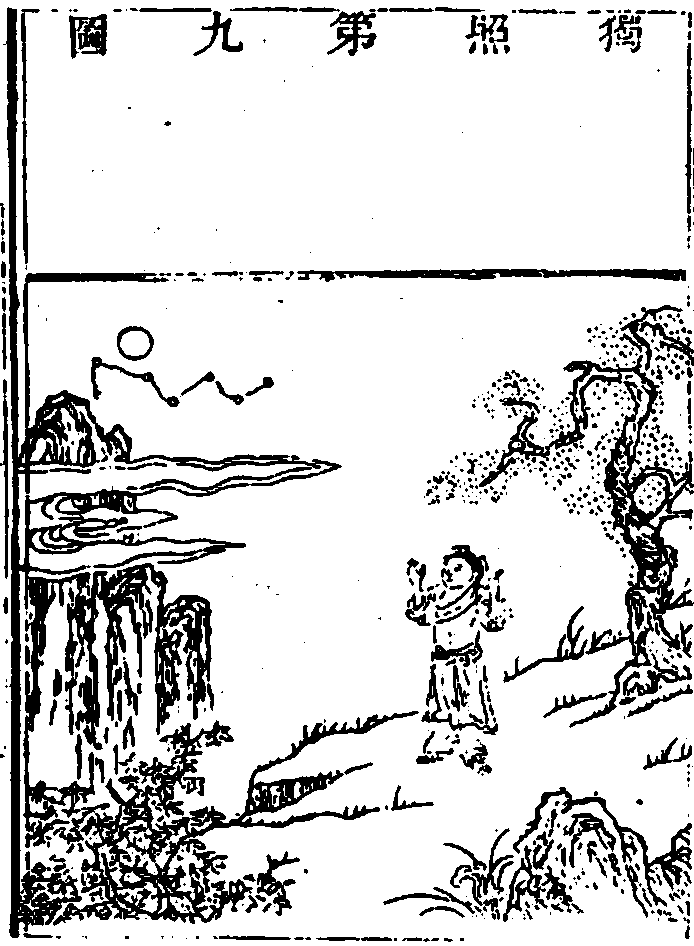
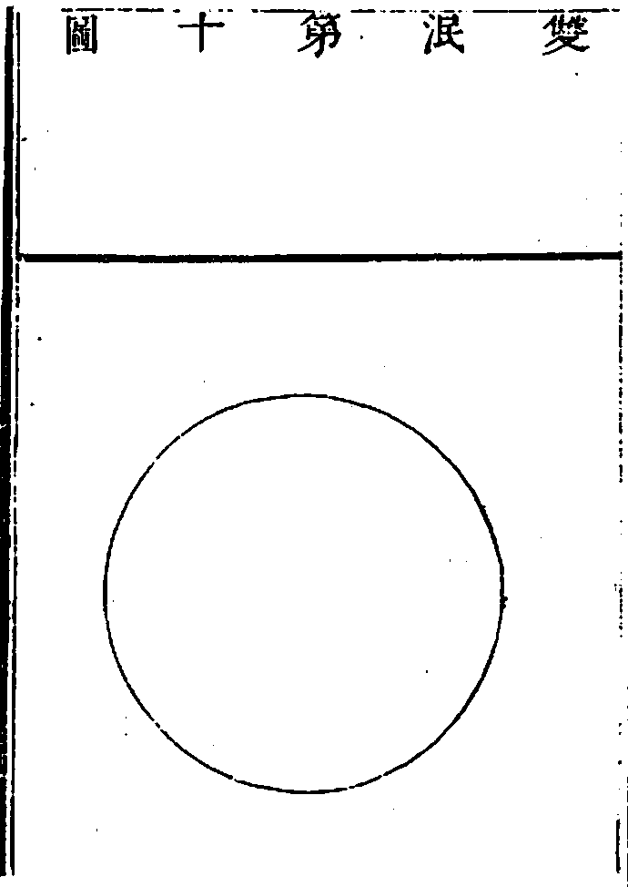

嘉興大藏經 第23冊
No.B129 牧牛圖頌 (1卷)
【明 普明原輯 性音續集舊跋 清 納信序 明 袾宏序 清 超格序 乾隆四十九年了彙重刊】
第 1 卷
刊牧牛圖頌序
牧牛之說創自契經。牧牛之人則歷代諸祖也。然其說其人雖見于佛祖。而牧牛之功于何見之。諸大禪師之圖頌所以照耀古今。為人之標榜耳。(信)本俗子。未純牧牛之功。竊見 夢老和尚所輯圖頌。真集牧牛之大成者。歡喜踴躍售諸梓人。公之天下。庶不辜佛祖一片為人苦心。
夢菴格禪師輯牧牛圖頌目錄
牧牛圖頌原序
遺教經云。譬如牧牛執杖視之。不令縱逸犯人苗稼。則牧牛之說所自起也。嗣是馬祖問石鞏。汝在此何務。荅曰牧牛。又問牛作麼生牧。荅曰一回入草去。驀鼻拽將來。則善牧之人也。又大溈安公之在溈山也。曰吾依溈山住。不學溈山禪。但牧一頭水牯牛。又白雲端公之於郭功輔也。詰之曰牛淳乎而。若自牧若教他牧。層見疊出於古今者益彰。彰矣後。乃有繪之乎圖。始於未牧終於雙泯。品而列之為十。其牛則如次初黑繼白。以至於無粲如也。而普明復一一係之以頌普明未詳何許人。圖頌亦不知出一人之手否。今無論惟是其為圖也。象顯而意深。其為頌也。言近而旨遠。學人持為左券。因之審德稽業。俯察其已臻。仰希其所未到。免使得少為足。以墮於增上慢地。則裨益良多。遂錄而重壽諸梓。外更有尋牛以至入廛。亦為圖者十。與今大同小異。俱附末簡以便參考。若夫一超直入之士。無勞鞭挽。而天然露地白牛。不落階級。而剎那能所雙絕。則圖成滯貨。頌成剩語。覽之當發一笑。吾無強焉。
萬曆己酉佛誕日後學袾宏謹書
又序
普明牧牛圖頌源流。雲栖序之詳矣。但敘云外更有尋牛以至入廛。亦為圖者十。與今大同小異。附末篇以便參考。而不及梁山遠公序偈何也。況梁山原唱既妙。附和代不乏人。其見地超卓聲調軒亮。希彝千嚴楚石三公獨據上流。普明原唱從而和之者固多。而磬山真寂南澗綠羅[車*度]轢次序井井。頗與普明相捋。至於別展機軸短音促節。精義入神惟大覺普濟禪師為最。真今古所不及。今將諸大老頌和普明者。附普明和梁山者。附梁山彙成一帙。刊布流通使天下參學之士。得因圖頌想見先德造誼。復因先德以自考驗其悟證。則牧牛圖頌有裨于禪者。較之南泉猶出一頭地在。
康熙四十四年佛誕日武林南澗夢菴超格識
未牧第一圖

牧牛十頌
古杭南澗夢菴超格輯
未牧第一頌
生獰頭角恣咆哮。奔走溪山路轉遙。一片黑雲橫谷口。誰知步步犯佳苗。
普明原唱
水雲渺渺亂聲哮。密密尋蹤路更遙。晝夜風霜不知處。恐伊相犯別家苗。
磬山修次韻
走遍天涯逞意哮。穿雲涉水路迢遙。多年一片閒田地。蹂踏堪憐損稼苗。
箬菴問
水草溪邊縱意哮。鼻頭無繫去迢遙。誰知宇宙皆王化。亂踏雲山犯稼苗。
山茨際
湘之南潭之北。頭角分明。東觸西觸。
玉林琇
空濛一片羨丹丘。何處天牛晚未收。染得渾身都是黑。牧人追逐氣難兜。
牧雲問
信足奔馳不憚勞。東西南北路迢遙。只貪芻草平田闊。忘卻家鄉有異苗。
聞谷印
雲山堆裏一聲哮。頭角宛然家信遙。滿地閒花都踏遍。那知異草并良苗。
嚴[車*度]轢居士
金臺迦陵性音續輯
野性顛狂聲亂哮。歸途不識路岐遙。那知腳下泥深淺。只管奔馳混踏苗。
夢菴格
昂頭野甸一聲哮。只顧奔馳路已遙。煙水茫茫迷岸畔。蹄涔不覺犯嘉苗。
納允菴居士
初調第二圖

初調第二頌
我有芒繩驀鼻穿。一回奔競痛加鞭。從來劣性難調制。猶(全)得山童盡力牽。
普明原唱
纔獲繩頭把鼻穿。謾將痛處更加鞭。也知鄉井迢迢遠。拽轉頭來著力牽。
磬山修次韻
鼻孔生獰不易穿。一回入草一加鞭。狂心何計能拴縛賴有山童把索牽。
箬菴問
芒繩初把鼻相穿。熟處難忘痛著鞭。分付牧童牢守護。莫教暫失(放)手中牽。
山茨際
少護頭多捕尾。月下風前。盛溺掃屎。
玉林琇
拚死芒繩驀鼻穿。上前退後苦相牽。腕頭用盡娘生力。痛治還須策一鞭。
牧雲門
氣性雖頑鼻已穿。牧童從此痛加鞭。渾身血汗芒繩急(緊)。遙望家山儘力牽。
聞谷印
生獰如虎鼻難穿。賴得牧童有索鞭。不是一番施辣手。個時劣性恐難牽。
嚴[車*度]轢居士
金臺迦陵性音續輯
潛通一竅鼻初穿。穿了纔堪痛下鞭。左右拘攣時不放。一條芒索緊相牽。
夢菴格
鼻端有竅急須穿。若不隨從漫息鞭。但怕顛狂難制伏。芒繩緊在手中牽。
納允菴居士
受制第三圖

受制第三頌
漸調漸伏息奔馳。渡水穿雲步步隨。手把芒繩無少緩。牧童終日自忘疲。
普明原唱
不從他性遠驅馳。十(步)步提持漫漫隨。幾度黑風吹暴雨。通身泥水總忘疲。
磬山修次韻
擬將何處更驅馳。暮雨朝煙緊自隨。蹤跡欲逃難躲避。任渠奔烈也(枉)成疲。
箬菴問
動容頑性好奔馳。左右旋眸渠緊隨。悵望遠山鄉信杳。披雲帶月正忘疲。
山茨際
而月白蹄墨黑。有索有鉤(鞭)。忍饑受渴。
玉林琇
清溪濯濯白雲深。出入何能放此心。水草時時令飽腹。他家苗稼可無侵。
牧雲門
暫時出草息奔馳好把芒鞋緊自隨。到處凍雲霜露滑。斤斤調伏敢忘疲。
聞谷印
熟徑難忘欲逞馳。芒繩在手緊相隨。豈容逐草尋芳去。晝夜拘拴不憚疲。
嚴[車*度]轢居士
金臺迦陵性音續輯
從今不敢復狂馳。信手牽來也肯隨。幾度披簑隴畝裏。櫛風沐雨那曾疲。
夢菴格
鞭朴頻加不敢馳。牽來步步也相隨。一聲短笛橫牛背。渡水穿山豈憚疲。
納允菴居士
迴首第四圖

迴首第四頌
日久功深始轉頭。顛狂心力漸調柔。山童未肯全相許。猶把芒繩且繫留。
普明原唱
驀地忘(知)機(非)自轉頭。悄然性氣已調柔。山中水草了知足。不用遲疑在外留。
磬山修次韻
翻然自肯便回頭。滿地殘紅襯草柔。故國有懷情未撇。暗愁春老尚遲留。
箬菴問
知恩逐步肯回頭。烈(猛)氣消融性漸柔。騎向平陂深草處。橫吹短笛絕羈留。
山茨際
遠邪蹊趨正道。步步登高。山長路杳。
玉林琇
多時只顧向前奔。那覺皮毛落不存。自肯回頭端的好。芒繩輕拽轉前村。
牧雲門
芒繩不引自迴頭。毛色皤然性已柔。水草也知山裏足。牧童多(著)意尚羈留。
聞谷印
暫時落草即迴頭。雲凍箱寒足(烈)已(性)柔。欲緩鞭繩尤未緩。鄉關不到且拘留。
嚴[車*度]轢居士
金臺迦陵性音續輯
要騎背上便低頭。拽轉頭來性亦柔。只恐有時還倔強。垂楊陰裡尚拘留。
夢菴格
一勒輕輕即轉頭。從前劣性亦調柔。只因未到全相信。且繫垂楊樹下留。
納允菴居士
馴伏第五圖

馴伏第五頌
綠楊陰下古溪邊。放去收來得自然。日暮碧雲芳草地。牧童歸去不須牽。
普明原唱
閒放林間與水邊。橫騎短笛任悠然。歸來一帶煙霞晚。瀟灑歌謠不假牽。
磬山修次韻
收來放去古溪邊。風月隨緣自悄然。水草不思無底事。相看撒手竟忘牽。
箬菴問
只在平田煙柳邊。鞭繩拋卻坐翛然。暮山鐘動上方月。恁麼歸來不假牽。
山茨際
戴寒鴉履芳草。毛骨馨香。見者道好。
玉林琇
遊行阡陌露堂堂。俗(塵)垢蠲除野性忘。早去晚歸能穩步。山根茅屋臥斜陽。
牧雲門
暖風晴日柳溪邊。俛首循人意悄然。花落郊原春色晚。相隨歸去不須牽。
聞谷印
高深蹊徑曲無邊。相狎相馴已信然。楊柳陰斜紅日轉。鼻頭繩斷不須牽。
嚴[車*度]轢居士
金臺迦陵性音續輯
月下風前山水邊。隨從到處竟恬然。相看彼此無回互。收捲繩頭不用牽。
夢菴格
古澗清溪柳岸邊。隨來隨去竟安然。如今休要頻拘絆。拋卻繩頭那用牽。
納允菴居士
無礙第六圖

無礙第六頌
露地安眠意自如。不勞鞭策永無拘。山童穩坐青松下。一曲昇平樂有餘。
普明原唱
出入無欄心自如。擬思量處更(即)猶(牽)拘。滿懷風月人牛穩。鞭索俱忘樂有餘。
磬山修次韻
縱步溪山得自如。風流兩岸亦何拘。橫吹短笛斜陽暮。溢目春光信有餘。
箬菴問
人牛相覷體如如。彼此無心不用拘。花柳叢中隨意往。團團蹄跡更無餘。
山茨際
寒暑安忙閒得。故鄉寬廓。任出任入。
玉林琇
簑笠橫拋嬾得收。笛聲吹起碧山幽。牛兒自在無他想。兩眼睜睜四足柔。
牧雲門
調伏多年意自如。水邊林下總無拘。一聲羌笛松風起。此日忘懷樂有餘。
聞谷印
水草皇王總自如。何須特地苦相拘。山童撒手先高坐。牛亦安然閒有餘。
嚴[車*度]轢居士
金臺迦陵性音續輯
人牛相伴已相如。鞭索全拋渾不拘。抿耳攢蹄安穩臥。悠揚笛韻樂無餘。
夢菴格
倔劣全無性已如。何勞繩索去相拘。平坡淺草恬然臥。風送笛聲韻有餘。
納允菴居士
任運第七圖

任運第七頌
柳岸春波夕照中。淡煙芳草綠茸茸。饑餐渴飲隨時過。石上山童睡正濃。
普明原唱
野岸溪灣花柳中。一環山水翠林茸。逍遙快活無求也。軟草為氈睡興濃。
磬山修次韻
不曾移步出山中。暖簇晴花五色茸。莫怪山童閒瞌睡。臥雲眠月興偏濃。
箬菴問
或時村裡或雲中。舊地閒田草正茸。踏遍一毫無剩跡。牧童高臥柳陰濃。
山茨際
朝隴畝暮茅檐。隨時水草。明月同閒。
玉林琇
春暖桃花放碧林。大家休歇綠楊陰。牧人乃夢牛偏醒。只在溪濱不用尋。
牧雲門
百花溪上柳陰中。飽食和雲臥綠茸。歌罷山童無所事。遺鞭枕上睡方濃。
聞谷印
信步行來到此中。山前山後草茸茸。放渠散走陂塘去。不似當年狂興濃。
嚴[車*度]轢居士
金臺迦陵性音續輯
盡日終年在此中。春回大地草初茸。隨時飲啖隨他去。管帶毋勞任睡濃。
夢菴格
往來只在此山中。遍地春光芳草茸。林下溪邊隨去住。牧童安枕睡初濃。
納允菴居士
相忘第八圖

相忘第八頌
白牛常在白雲中。人自無心牛亦同。月透白雲雲影白。白雲明月任西東。
普明原唱
拶到忘懷混沌中。千山一色絕相同。風光不覺人牛處。任運騰騰西復東。
磬山修次韻
相將無事太平中。渠我情忘迥不同。一段閒愁總收拾。不知花落水流東。
箬菴問
撐撐頭角臥林中。渠我渾忘雲水同。為愛山前芻草細。夜深乘月過溪東。
山茨際
刀砍水珠斷貫。澹泊寧靜。明志致遠。
玉林琇
牛王昨夜證心空。比舊皮毛大不同。渠我不須重話會。白雲明月笑相通。
牧雲門
在此溪山雲月中。木人花鳥意相同。國王水草從來足。閒步陂塘西復東。
聞谷印
太平氣象月明中。爾我家山色色同。袖手低眉忘管帶。不知西去與來東。
嚴[車*度]轢居士
金臺迦陵性音續輯
白牛誰道雪山中。此日看來一色同。牛也蕭閒人也散。任他南北與西東。
夢菴格
人牛隱隱在雲中。牛白白雲色色同。此際那分賓與主。任從西也任從東。
納允菴居士
獨照第九圖

獨照第九頌
牛兒無處牧童閒。一片孤雲碧嶂間。拍手高歌明月下。歸來猶有一重關。
普明原唱
不須收放得安閒。脫略尋常顧盻間。散步謾歸明月下。踏翻從上兩重關。
磬山修次韻
一道寒光萬境閒。寥寥四顧水雲間。夜深明月歸來晚。照徹空王向上關。
箬菴問
個裡風光鎮日閒。放身穩臥白雲間。長歌一曲聲嘹喨。直透威音劫外關。
山茨際
失(牛)卻(不)牛(見)撞(人)破(獨)壁(立)。一(窮)個(相)閒(雙)身(手)。赤灑灑的。
玉林琇
誰道三更失卻牛。溪山獨立悵無儔。空來兩手真難放。一拍虛空笑點頭。
牧雲門
玉(竹)鞭無用草繩閒。蹤跡全無古路間。空手獨歸林月下。更前一步即牢關。
聞谷印
蹤跡寥寥獨個閒。渾然出處那其間。自歌自唱空山下。多少癡人認過關。
嚴[車*度]轢居士
金臺迦陵性音續輯
牛既忘兮心自閒。閒閒來往在山間。灰頭土面渾無事。枯木巖前尚有關。
夢菴格
牛兒不牧一身閒。獨自徘徊山水間。雖是出塵無事客。還須撒手透重關。
納允菴居士
雙泯第十圖

雙泯第十頌
人牛不見杳無蹤。明月光寒萬象空。若問其中端的意。野花芳草自叢叢。(寒或作含)。
普明原唱
人牛處處竟無蹤。新月孤懸萬象空。借問歸源端的旨。枯樁春到綠叢叢。
磬山修次韻
從前光影覓無蹤。不見人牛煙水空。盡大地回春夢曉。日高香散百花叢。
箬菴問
不見人牛不(絕)見(跡)蹤。清風明月滿長空。太平休用歌堯令。枯木重開花一叢。
山茨際
拋靈符瞎正目。函乾蓋坤火寒雪毒。
玉林琇
蝸牛角上立生涯。彼此從來共一家。堪笑前人留此相。烏藤三十不容賒。
牧雲門
杳杳人牛不見蹤。一團新月照秋空。個中若問還源旨。風落巖花點翠叢。
聞谷印
人牛謾說絕形蹤。何異吹風欲滿空。若問還源親的旨。參天荊棘亂叢叢。
嚴[車*度]轢居士
金臺迦陵性音續輯
絕無人影與牛蹤。階級何為鑿太空。究竟本來無一物。依然萬象自叢叢。
夢菴格
見絕人牛豈有蹤。猶如淨月遍虛空。者回休問其中意。鳥自啼兮花自叢。
納允菴居士
牧牛又十頌
古杭南澗夢菴超格輯
尋牛第一頌(梁山遠原敘)
從來不失何用追尋。由背覺以合塵 向迷面逐妄。家山漸遠岐路嵯峨。得失熾然是非蜂起。
忙忙撥草去追尋。水闊山遙路更深。力盡神疲無處覓。但聞楓樹晚蟬吟。
梁山遠原唱
只管區區向外尋。不知腳底已泥深。幾回芳草斜陽裡。一曲新豐空自吟。
石鼓希彝次韻
暫時不在急須尋。莫待渠儂入草深。滿目青山無(何)別(處)跡(去)。只消回首一沉吟。
千巖長
天涯海角遍參尋。直入萬重煙嶂深。拼得今朝與明日。綠楊堤畔聽鶯吟。
楚石琦
金臺迦陵性音續輯
牛兒原在不須尋。怎奈忘來歲月深。今欲為伊親指示。聯珠且自和高吟。
夢菴格
牛兒忘卻要追尋。尋去尋來路轉深。日暮關山何處覓。亂雲堆裏自沉吟。
納允菴居士
見跡第二頌(梁山遠原敘)
依經解義問教知蹤。明眾器為一金體。萬物為自己。正邪不辨。真偽未分。欠悟入門。權為見跡。
水邊林下跡偏多。荒草離披見也麼。縱是深山更深處。撩天鼻孔爭藏他。
梁山遠原唱
枯木崖前差路多。草窠裏輥覺非麼。腳跟若也隨他去。未免當頭蹉過他。
石鼓希彝次韻
也知隔遠苦無多。只管貪程作甚麼。蹄踏蹄兮嘴(只)對(者)嘴(是)。明明此物更非他。
千巖長
東西南北路途多。踏踏遺蹤可是麼。仔細看來無兩個。便從今去莫疑他。
楚石琦
金臺迦陵性音續輯
深深淺淺跡蹤多。不是渠兮是甚麼。從此腳跟勤著力。必須覿面一逢他。
夢菴格
山坡柳岸蹄痕多。仔細凝眸是也麼。識得跡蹤須著力。從今步步要尋他。
納允菴居士
見牛第三頌(梁山遠原敘)
聞聲得入見處逢源。六根門首無差。動用之中顯露。水中鹽味色裡膠青。眨上眉毛更非他物。
黃鸝樹上一聲聲。日暖風和岸柳青。只此更無迴避處。森森頭角畫難成。
梁山遠原唱
識得形容認得聲。戴嵩從此妙丹青。徹頭徹尾渾相似。仔細看來未十成。
石鼓希彝次韻
臨風忽叫攚和聲。抬起頭來雙眼青。業債知他填未足。歸耕隴畝望秋成。
千巖長
隔墻認角又聞聲。雨過前村草正青。一對眼睛烏律律。通身毛色畫難成。
楚石琦
金臺迦陵性音續輯
獨露溪邊叫一聲。通身毛片色青青。向來枉自空尋覓。此際看來本現成。
夢菴格
遠遠忽聞叫幾聲。隔溪一望草青青。本來鼻孔端然在。縱使嵩公畫不成。
納允菴居士
得牛第四頌(梁山遠原敘)
久埋(奔)郊外今日逢渠。由境勝以難追。戀芳叢而不已。頑心尚勇劣性猶存。欲得純和必加鞭撻。
竭盡精神獲得渠。心狂力壯卒難除。有時纔到高原上。又入煙霞深處居。
梁山遠原唱
牢把繩頭莫放渠。幾多毛病未曾除。徐徐驀鼻牽將去。且要回頭識舊居。
石鼓希彝次韻
如今處處得逢渠。帶水拖泥不用除。總是國王田地上。何妨春草埠頭居。
千巖長
遼天鼻孔要穿渠。直待金(芒)繩爛始除。向去不須分皂白。和泥和(合)水且同居。
楚石琦
金臺迦陵性音續輯
我儂竭力只因渠。到手如何肯放除。所以藥山茅屋下。牛欄名字好安居。
夢菴格
水盡山窮始得渠。此時野性尚難除。一條芒索牢穿住。不許狂奔向外居。
納允菴居士
牧牛第五頌(梁山遠原敘)
前念纔起後念相隨。由覺故以成真。向迷因而成妄。不惟境起皆自心生。鼻索牢牽不容擬議。
鞭索時時不離身。恐伊縱步惹埃塵。相將收得▆▆▆羈鎖無拘自逐人。
梁山遠原唱
甘分山林寄此身。有時亦踏馬(向)蹄(風)塵。不從(曾)犯著人苗稼。來往空勞背上人。
石鼓希彝次韻
百草頭邊百億身。如何得不犯纖塵。鼻繩拽轉從頭看。誰是牛兮誰是人。
千巖長
從來一個不羈身。滿眼雲山滿眼塵。今日稍能知觸淨。肯緣苗稼犯他人。
楚石琦
金臺迦陵性音續輯
短笛橫吹仰臥身。山中水草淨無塵。些些隨分隨時納。敢把禾苗犯別人。
夢菴格
手把鞭繩緊逼身。莫教信步踏黃塵。一迴入草忙牽轉。那肯隨他去犯人。
納允菴居士
騎牛到家第六頌(梁山遠原敘)
干戈已罷得失還無。唱樵子之村歌。吹兒童之野(短)笛。身橫牛背目視雲霄。呼喚不回牢籠不住。
騎牛迤邐欲還家。羌篴聲聲送晚霞。一拍一歌無限意。知音何必鼓唇牙。
梁山遠原唱
指點前坡即是家。旋吹筒角出煙霞。忽然變作還鄉曲。未必知音是伯牙。
石鼓希彝次韻
露地橫眠已到家。不騎泥像學丹霞。尾巴搖動三千界。還作宗門中爪牙。
千巖長
前坡咫尺是儂家。疊疊春山橫暮霞。好個歸來時節子。一鉤新月挂檐牙。
楚石琦
金臺迦陵性音續輯
歷遍崎嶇已到家。任他風雨共煙霞。崢嶸頭角端然好。老少何須論齒牙。
夢菴格
歷盡溪山始到家。任從落日散雲霞。歸來不語程途事。何必逢人挂齒牙。
納允菴居士
忘牛存人第七頌(梁山遠原敘)
法無二法。牛 為宗喻魚兔之異名。顯筌蹄之差別。如金出礦似月離雲。一道寒光威音劫外。
騎牛已得到家山。牛也空兮人也閒。紅日三竿猶作夢。鞭繩空頓草堂間。
梁山遠原唱
欄內無牛趁出山。煙簑雨笠亦空閒。行歌坐樂無拘繫。贏得一身天地間。
石鼓希彝次韻
無牛得看只看山。一個翁(童)翁(兒)閒更閒。喜得白雲相伴住。谿邊茅屋兩三間。
千巖長
千重雲樹萬重山。倒臥橫眠任我閒。此景畫圖收不得。誰言身在畫圖間。
楚石琦
金臺迦陵性音續輯
不見牛兒但見山。終朝蕭灑自閒閒。有時拍手高歌去。只在山間與水間。
夢菴格
鞭繩拋下嬾登山。無了牛兒心自閒。睡足不知窗外事。夕陽已射草堂間。
納允菴居士
人牛俱忘第八頌(梁山遠原敘)
凡情脫落。聖意皆空。有佛處不得住。無佛處急走過。兩頭不著。千聖難窺。百鳥啣花一場懡[怡-台+羅]。
鞭索人牛盡屬空。碧天寥廓信難通。紅爐燄上曾容雪。到此方能合正宗。
梁山遠原唱
慚愧眾生界已空。個中消息若為通。後無來者前無去。未審憑誰繼此宗。
石鼓希彝次韻
皮毛筋骨蕩然空。好手無勞遊刃通。正眼瞎(從)驢(今)邊(都)滅卻。更將何物顯真宗。
千巖長
翻身踏破太虛空。一處纔通處處通。匝地普天無影跡。不知誰解立吾宗。
楚石琦
金臺迦陵性音續輯
人牛生活一時空。到此方知處處通。建立從空還掃蕩。十方世界顯正宗。
夢菴格
人牛雙遣露真空。內外無私萬法通。莫立纖塵蹤跡泯。堂堂何處不歸宗。
納允菴居士
返本還源第九頌(梁山遠原敘)
本來清淨不染一塵 有相之榮枯 無為之凝寂。不同幻化豈假修持。水綠山青。坐觀成敗。
返本還源已費功。爭如直下若盲聾。菴中不見菴前物。水自茫茫花自紅。
梁山遠原唱
靈機不墮有無功。見色聞聲不用聾。昨夜金烏飛入海。曉來依舊一輪紅。
石鼓希彝次韻
現成公案孰施功。耳不盲兮眼不聾。一一音聲諸色相。分(鳥)明(啼)黑(花)白(落)間(滿)青(溪)紅。
千巖長
一一根門自有功。聞聲見色不盲聾。晨昏總是尋常事。睡起三竿日正紅。
楚石琦
金臺迦陵性音續輯
休笑從前枉用功。聰明黜盡類盲聾。巖前不見菴中主。鳥任啼兮花任紅。
夢菴格
識透根源作甚功。聲聞色見似盲聾。春來莫問東君意。數盡枝頭院落紅。
納允菴居士
入廛垂手第十頌(梁山遠原敘)
柴門獨掩千聖不知。 自己之風光。 前賢之途轍。提瓢入市杖笠還家。酒肆茶坊化令成佛。
露胸跣足入廛來。抹土塗灰笑滿腮。不用神仙真妙訣。直教枯木放花開。
梁山遠原唱
者漢親從異類來。分明馬頷與驢腮。一揮鐵棒如風疾。萬戶千門盡豁開。
石鼓希彝次韻
殺人便解活人來。鬣頷何妨又吒腮。甘作畜生行異類。重重關鎖盡衝開。
千巖長
珍御全拋與麼來。分明烏嘴與魚腮。輝天鑑地能育特。盡使勞生眼豁開。
楚石琦
金臺迦陵性音續輯
酒肆淫房任往來。莫教腦後露雙腮。全身同事全機攝。要使群生眼盡開。
夢菴格
柳巷花街任去來。蓬頭赤腳笑盈腮。虛空粉碎全身現。朵朵優曇火裡開。
納允菴居士
跋
雲栖蓮大師重刊牧牛圖頌。而普明之名方著。梁山遠原唱。吾師夢老人覓之四十載未獲一見。主南澗日始得于幻舟和尚所。喜不自勝。但原本蠹郵數字。遂空之。俟再得他本查補。今仍其舊。至諸公頌內亦有數字可商者。老人易字于本頌下。請政大方(音)見聞疏略。未能盡閱古今諸錄。謹將老人自頌。及納公發心刊刻亦次彙入。伏望 諸方尊宿倘于古德錄中得牧牛佳頌。乞郵寄白門古鏡俾續二集。
乾隆四十九年佛誕日 戒臺寺了彙重刊